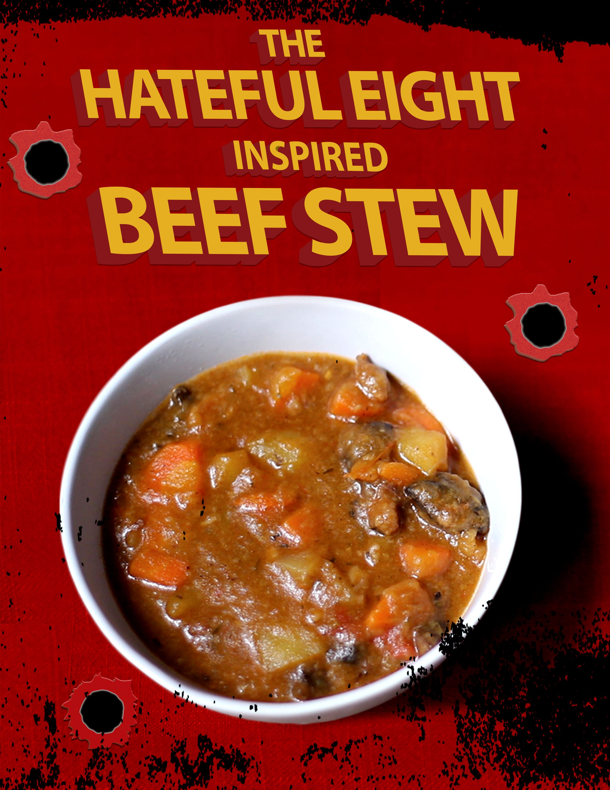

Beef stew inspired by The Hateful Eight movie

Description
A very simple, yet extremely delicious beef stew that is inspired by Quentin Tarantino's movie «The Hateful Eight»
Ingredients
- Half of an onion
- 220 grams of beef
- One carrot
- Two potatoes
- One tablespoon of olive oil
- Two tablespoons of flour
- Half a teaspoon of peppercorns
- Half a teaspoon of salt
- One tablespoon of butter
- Hot water
- One bay leaf
Steps
- Chop half an onion.
- Cut beef as for goulash.
- Cut carrot into cubes.
- Cut potatoes into cubes (The should be slightly larger than carrots).
- Heat a tablespoon of olive oil in a saucepan.
- Fry an onion and then add beef to the onion.
- Sear the meat from all sides then add flour.
- Add one tablespoon of butter and stir it.
- Pour water into a saucepan, just to cover the meat.
- Add salt and peppercorns.
- Then add your cut potatoes and carrot
- Add water again to cover the ingredients with it.
- Use a wooden spoon to scrape off crust from the bottom of your saucepan.
- Cover your saucepan and simmer the stew for 30 minutes.
- Add bay leaf and check vegetables for softness.
- Cook for 5 more minutes.
- Enjoy the stew you just made!